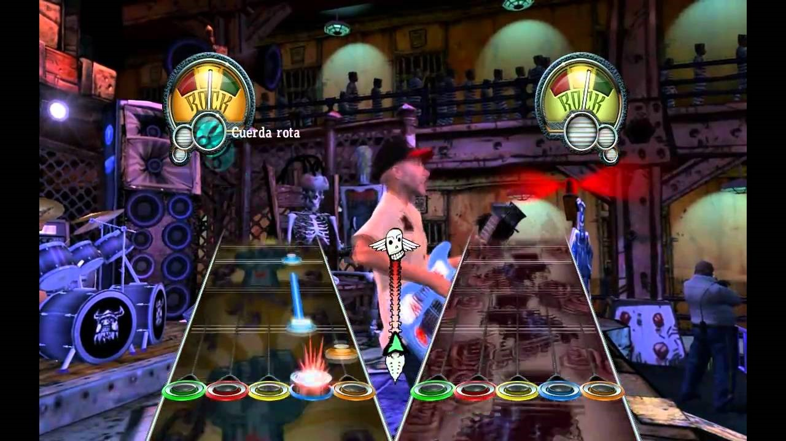

¡Cuidado por ahí! Reseña: Night in the woods

El ambiente que rodea a este juego es uno sumamente familiar y cálido. El ambiente en un videojuego puede ir más
allá que simplemente el escenario; sino puede representarse en la música, las mecánicas, los diálogos y los personajes.
Y el ambiente que da este juego en esos aspecto es sin duda destacable. El juego es una novela visual junto con
minijuegos que ayudan al entendimiento e inmersión de la historia, lo cual es fantástico, una novela visual que no sólo
cuenta su historia en los típocos diálogos, sino que se explica a travéz de las mecánicas, ya que los minujuegos o la
ciudad en sí como sandbox complementas a los ya inteligentes y naturales diálogos de los peronajes.
Ahora, ¿de qué trata el juego? a grandes rasgos va sobre Mae Borowski, una gata de 20 años que tras abandonar la
universidad, regresa a su ciudad natal "poussum springs" un pueblo ex-minero donde viene a buscar un lugar mas cálido y familiar, mientras
se resuelven unos casos de desapación algo sobrenaturales que acompañan a la trama principal.
La intención con el juego es representar bien lo que es vivir en un pueblo pequeño en crecimiento (o en este caso,
decrecimiento) y sobre las dificultades que se puede pasar ahi siendo jóven.
A veces, cuando juegas a un videojuego debes tener en cuenta de el juego hará muchas asunciones sobre ti, como tu posición
econímica, las amistades que tienes y cómo tratas problemas. La mayor suposición que hace el juego sobre ti es que
quizás no estás pasando por un buen momento o tienes algo que te preocupa, y este tema lo trata muy bien el juego, con
esta suposición, el juego quiere que se reflejes en uno de los personajes, así puedas llevar la historia de ese mismo
personaje junto a la tuya. Hay muchas lecciones que deja el juego, pero una de las más importantes es que al final de todo,
debes aferrarte a lo que sea.
La misma formula sigue, funciona y va mejor. Reseña: Guitar Hero III: Legends of Rock

Guitar Hero III es un juego musical que tiene la particularidad de que se puedo jugar con un dispositivo físico en forma de guitarra con la que se simula tocar música representando notas de colores en la pantalla que corresponde a cada uno de los botones del controlador. De forma general el juego repite la fórmula que venia usando en los previos Guitar Hero; una mecánica casi idéntica a sus predecesores, con una notoria mejora en estética y apartados visuales, así como los efectos que nos acompañan alrededor de cada canción hacen que la experiencia sea claramente agradable y nos deje una satisfacción al terminar cada canción de “lo logre”, y mas aun cuando en el modo carrera, el juego presenta además de tener que tocar canciones para poder avanzar (como es evidente en un juego musical) una serie de desafíos contra personajes dentro del juego en una batalla de guitarras en las que debes vencer a tu rival si quieres seguir avanzando teniendo como Final Boss o jefe final al Lou, una representación del señor del inframundo como señor de las guitarras que viene a desafiarte.
Sin duda es un juego que en un comienzo te engancha fácil, pero si es cierto que una vez terminando el modo carrera, puede ser algo monótono cuando llegas a tu limite en lo que puedes mejorar, y es por ello que el juego cuenta con modos de juego alternos en los que estar acompañado es fundamental, ya que es necesario contar con un compañero para poder jugarlos, y que en definitiva hacen la experiencia de juego aun mas divertida; ya que cuenta con modos colaborativos para tocar canciones como modos en los que te enfrentas a tu compañero, y obviamente cada quien quiere conseguir la victoria, lo que hace emocionante tocar cada canción. En definitiva, un gran juego con una mecánica sencilla de entender pero difícil de dominar en las dificultades mas altas, que nos brinda un apartado auditivo totalmente disfrutable y que nos asegura pasar un gran rato jugando.
No difícil, sólo exigente. Reseña: Dark Souls

Cuando se hablan se juegos difíciles, nunca se olvida se mencionar al clásico de culto: Dark Souls. Un juego que gracias a
el apoyo de su comunidad y de la prensa, y no por nada, en una generación donde las dificultadas de los juegos hacían que
prácticamente se jugaran solos, sale Dark Souls a presentar un desafio puro.
Mucha gente lo ha catalogado de juego muy injusto y difícil a drede, pero ese no es el caso aquí, lo que es dark souls es que es
muy exigente, pide mucho de ti para mejorar y en sí, el juego es difícil porque las mecánicas son así. El juego es así porque
busca una experiencia en la que los combates tengan que ser pausados y frenéticos a la vez, un combate donde cada movimiento
tenga un peso enorme y te lo pienses mejor en general.
Pero Dark Souls no es sólo su dificultad, también destaca en sus escenarios, música, historia y conexión entre el mapa de
Lordran. Esta sencación de que el mundo está conectado es algo maravilloso y la única forma de entenderlo es jugarlo y experimentarlo.
Dark Souls no es para todo el mundo, es un juego que sí que puede sacar de quisio a mucha gente que no es paciente y busca
algo más rápido en vez de pausado, pero creo que es algo que debas darle una oportunidad.
La mezcla de varias mecánicas resulta espectacular. Reseña: Valorant

Valorant es un juego de disparos conocido como un “shooter tactico” de 5vs5 que implementa el uso de personajes llamados agentes, que cuentan con habilidades que hacen del juego algo increíble. Si bien la primera experiencia que obtuve al adentrarme en jugar valorant fue agridulce; al no haber jugado videojuegos FPS (first person shooter) durante mi vida el adaptarme a las mecánicas que ofrece el juego fue difícil. Un juego que durante el lanzamiento de la beta abierta (en abril de 2020) el mundo lo vio con malos ojos, y lo llamaban el mal resultado de combinar las mecánicas de juego generales de CS:GO y Overwatch; pero que durante
el desarrollo y actualizaciones constantes que salieron durante la beta abierta y posteriormente en su lanzamiento oficial (2 de junio de 2020) han demostrado que es un juego que ha llegado para quedarse. Si bien mi experiencia inicial no fue la mejor, el proceso de irse adaptando y mejorando en cada partida ha sido totalmente gratificante; el hecho de contar con múltiples agentes que permiten que cada partida sea totalmente diferente, y que las habilidades de los agentes en conjunto con sus ultimates, te hacen estar alerta en todo momento sin mencionar que lo primordial es saber disparar.
En la actualidad, Valorant se ha vuelto mi juego favorito y el poder jugarlo con amigos hace la experiencia de juego sea super agradable y que de seguro hare que pasen buenos ratos, con momentos de tensión y de alegría por el hecho de ganar la partida.
El mundo virtual más real. Reseña: The legend of Zelda, breath of the wild

Cuando hablamos sobre aventuras en los videojuegos, la saga de the legend of zelda siempre será mencionada como un
pionero en el género, ya que sus primeros juegos evocaban esa sensación de descubrimiento y aventura, a pesar de las
limitaciones del medio en ese entonces. Ahora la saga Zelda regresa a sus orígenes con un mundo mas vivo que nunca,
aprovechando las nuevas tecnologías, Nintendo nos muestra el mundo abierto que presenta breath of the wild. Un mundo
el cual se rige mucho por sus normas y mecánicas, el cual tiene tanto paisajes hermosos como lugares hostiles.
En cuanto a la exploración y el sandbox, el juegfo cumple con su función de maravilla, pero la saga Zelda igual se
caracteriza por sus historias, pero esta entrega deja mucho que desear en ese aspecto, aunque este punto se puede pasar
y se puede entender, ya que el juego es más que nada un sandbox, el cual es un tipo de juego que no se centra ni se rige
por su historia.